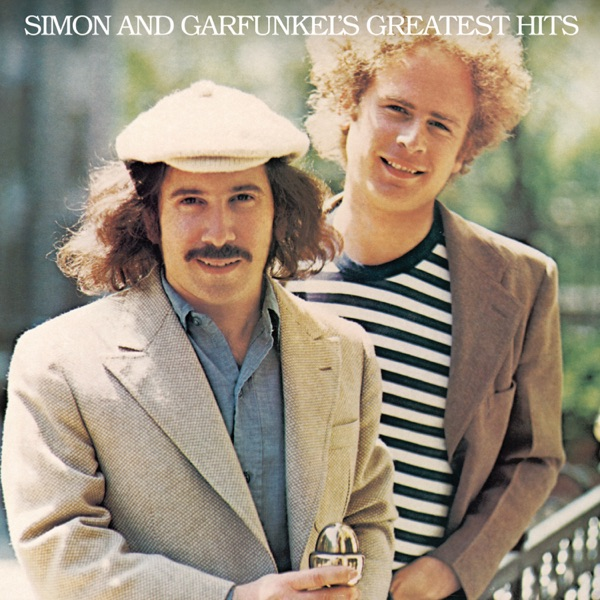

Simon And Garfunkel's Greatest Hits
Simon & Garfunkel
Upgrade idea: A Mobile Fidelity (MOFI) half-speed remaster of Bridge Over Troubled Water exists and is exceptional. No MOFI or audiophile pressing of this specific Greatest Hits compilation has been issued — the 2018 repress is the standard modern option.
- Original release
- 1972
- Pressing year
- 2018
- Country
- USA & Europe
- Format
- Vinyl LP, Compilation, Reissue
- Label / Cat#
- Legacy – 19075817661 / Columbia – KC 31350
- Genres
- Rock, Folk, World, & Country
- Styles
- Folk Rock
- Discogs release
- 11947207
- Discogs master
- 27798
- Apple Music
- Simon and Garfunkel's Greatest Hits
- Wikipedia
- Simon And Garfunkel's Greatest Hits
Production notes
Tracklist (Discogs)
| A1 | Mrs. Robinson | 4:02 |
| A2 | For Emily, Whenever I May Find Her | 2:04 |
| A3 | The Boxer | 5:07 |
| A4 | The 59th Street Bridge Song (Feelin' Groovy) | 1:43 |
| A5 | The Sound Of Silence | 3:02 |
| A6 | I Am A Rock | 2:50 |
| A7 | Scarborough Fair/Canticle | 3:08 |
| B1 | Homeward Bound | 2:30 |
| B2 | Bridge Over Troubled Water | 4:52 |
| B3 | America | 3:34 |
| B4 | Kathy's Song | 3:16 |
| B5 | El Condor Pasa (If I Could) | 3:06 |
| B6 | Bookends | 1:16 |
| B7 | Cecilia | 2:55 |
Tracklist (Apple Music)
| 1 | Mrs. Robinson (Single Mix) | 3:54 |
| 2 | For Emily, Whenever I May Find Her (Live In St. Louis, MO - November 1969) | 2:25 |
| 3 | The Boxer | 5:14 |
| 4 | The 59th Street Bridge Song (Feelin' Groovy) [Live at Carnegie Hall, New York, NY - July 1970] | 1:50 |
| 5 | The Sounds of Silence | 3:07 |
| 6 | I Am a Rock | 2:50 |
| 7 | Scarborough Fair / Canticle | 3:10 |
| 8 | Homeward Bound (Live at Carnegie Hall, New York, NY - July 1970) | 2:42 |
| 9 | Bridge Over Troubled Water | 4:55 |
| 10 | America (Single Mix) | 3:33 |
| 11 | Kathy's Song (Live In St. Louis, MO - November 1969) | 3:21 |
| 12 | El Condor Pasa (If I Could) | 3:09 |
| 13 | Bookends (Single Mix) | 1:20 |
| 14 | Cecilia (Single Mix) | 2:49 |
Personnel & credits
- Paul Simon — Composed By
- Robert Weston — Lacquer Cut By
- Bill Silano — Photography By [Cover]
- Art Garfunkel — Producer
- Paul Simon — Producer
- Roy Halee — Producer
Identifiers
- Barcode: 190758176611
- Matrix / Runout: 19075817661A (Side A label)
- Matrix / Runout: 19075817661B (Side B label)
- Matrix / Runout: 19075817661 / MRP1194 - A [CMS logo] BW180221 A1 (Side A runout etched, variant 1)
- Matrix / Runout: 19075817661 / MRP 1194 - B [CMS logo] BW180221 B2 (Side B runout etched, variant 1)
- Matrix / Runout: 19075817661 / MRP1194 - A [CMS logo] BW180221 A15 (Side A runout etched, variant 2)
- Matrix / Runout: 19075817661 / MRP1194 - B [CMS logo] BW180221 B15 (Side B runout etched, variant 2)
Notes
Includes Download Code Insert
Lacquer cut on February 21, 2018.
Notes & discrepancies
- Total runtime differs by 54s (Discogs=2605s, Apple Music=2659s) — likely a different master/remaster.
- Release year differs: your pressing=2018, Apple Music edition=1972. Apple Music typically streams the most recent remaster.
Simon & Garfunkel’s essential 1972 greatest hits — ‘Bridge Over Troubled Water,’ ‘The Sound of Silence,’ ‘The Boxer,’ ‘Mrs. Robinson,’ twelve tracks of definitive folk-pop. 2018 Columbia/Legacy reissue (19075817661). Still sealed — pressing plant unknown until opened.